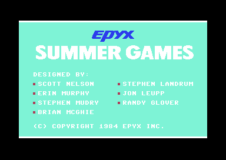
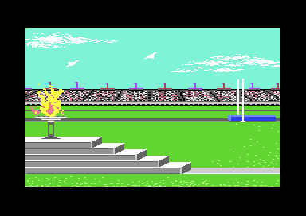

<meta charset="utf-8">
<meta name="viewport" content="width=device-width, initial-scale=1">
<title>Summer Games</title>
<link rel="preconnect" href="https://fonts.googleapis.com">
<link rel="stylesheet" href="https://fonts.googleapis.com/css2?family=Lato:wght@400;700;900&family=IBM+Plex+Mono:wght@400;500&display=swap">
<style>
:root{
  --bg:#23262d; --paper:#e9e7e1; --surface:#ffffff; --surface-2:#f1efea; --line:#d5d3cc; --line-soft:#e0ded8;
  --ink:#2f3136; --ink-soft:#55585f; --ink-mute:#80838a;
  --link:#1f5fa8; --link-hover:#154480; --accent:#1f5fa8;
  --amber:#c25a00; --cyan:#1f5fa8; --coral:#d04a3a; --green:#2a8a4a; --violet:#4a5bd6; --hl:#fff0c2;
  --chip:#2f3136; --chip-ink:#ffffff;
  --c64blue:#40318d; --c64grey:#686868;
  --fd:'Lato',system-ui,sans-serif; --fb:'Lato',system-ui,sans-serif; --fm:'IBM Plex Mono',ui-monospace,Menlo,monospace;
  --col:1080px; --gx:68px; --fs:17px; --lh:1.6; --hw:900; --h1:46px; --h2:26px; --sy:48px; --pp:26px; --r:10px;
  --plate-shadow:0 1px 2px rgba(0,0,0,.05),0 4px 14px rgba(0,0,0,.05);
}
*{box-sizing:border-box}
html{background:var(--bg);min-height:100%}
body{background:var(--paper);color:var(--ink);font-family:var(--fb);font-size:var(--fs);line-height:var(--lh);max-width:var(--col);margin:0 auto;min-height:100vh;padding:0 0 4rem}
h1,h2,h3{font-weight:var(--hw);letter-spacing:-.01em;text-wrap:balance;color:var(--ink);margin:0}
.wrap{padding:0 var(--gx)}
.hero{padding:48px var(--gx) 8px;text-align:left}
.eyebrow{font-family:var(--fm);font-size:12px;letter-spacing:.08em;text-transform:uppercase;color:var(--ink-mute);margin:0 0 10px}
.hero h1{font-size:var(--h1);line-height:1.15;letter-spacing:-.02em;margin:0 0 14px}
.hero .sub{margin:0 0 .6em;color:var(--ink-soft)}
section{padding:var(--sy) 0 24px}
section:last-of-type{border-bottom:none}
.fig{font-family:var(--fm);font-size:12px;letter-spacing:.08em;text-transform:uppercase;color:var(--ink-mute);margin:0 0 10px}
h2.t{font-size:var(--h2);margin-bottom:12px}
.lede{color:var(--ink-soft);margin:0 0 30px}
.plate{background:var(--surface);border:1px solid var(--line);border-radius:var(--r);padding:var(--pp);box-shadow:var(--plate-shadow)}
.cap{font-size:14px;color:var(--ink-mute);margin-top:14px;line-height:1.55}
.cap b{color:var(--ink);font-weight:700}
code{font-family:var(--fm);font-size:.82em;background:var(--chip);color:var(--chip-ink);border-radius:4px;padding:2px 6px;overflow-wrap:break-word;-webkit-box-decoration-break:clone;box-decoration-break:clone}

.plate{margin:0 0 22px}
sup.fn{font-size:.7em;line-height:0}
sup.fn a{text-decoration:none}
sup.fn + sup.fn::before{content:","}
.overview-shot{margin:22px 0}
.overview-shot img{width:100%;max-width:768px;height:auto;aspect-ratio:384/272;image-rendering:pixelated;display:block}
.overview-shot figcaption{font-size:14px;color:var(--ink-mute);margin-top:8px;max-width:768px}
.gg-px{image-rendering:pixelated;display:block;max-width:100%;height:auto;margin:0 auto 10px}
.gg-wide{width:100%}
.gg-read{font-family:var(--fm);font-size:13px;background:var(--surface-2);border-radius:6px;padding:8px 12px;margin:8px 0 10px}
.gg-two{display:grid;grid-template-columns:1fr 1fr;gap:16px;align-items:end}
.gg-two figure{margin:0}
.gg-two figcaption{font-family:var(--fm);font-size:12px;color:var(--ink-mute);text-align:center}
.gg-lab{display:block;font-family:var(--fm);font-size:13px;color:var(--ink-soft);margin:10px 0 4px}
.gg-range{width:100%;max-width:520px;display:block}
.gg-table{border-collapse:collapse;font-size:15px;width:100%;margin:0 0 12px}
.gg-table td,.gg-table th{border-bottom:1px solid var(--line-soft);padding:6px 8px;text-align:left;vertical-align:top}
.gg-scroll{overflow-x:auto}
@media (max-width:760px){:root{--gx:16px;--h1:36px;--pp:14px}.gg-two{grid-template-columns:1fr}}
.gg-map{display:block;image-rendering:pixelated;cursor:crosshair;max-width:none}
.gg-check{display:flex;align-items:center;gap:6px;margin-left:10px;font-family:var(--fm);font-size:13px}
.gg-judo{display:grid;grid-template-columns:auto 1fr;gap:16px;align-items:start}
.gg-judo canvas{max-width:100%;height:auto;cursor:crosshair;image-rendering:auto}
.gg-shields{display:flex;flex-wrap:wrap;gap:6px;align-content:flex-start}
[data-own-look] .gg-shields button,[data-own-look] .gg-run button{font:500 13px var(--fm);padding:6px 10px;border:1px solid var(--line);border-radius:6px;background:var(--surface);color:var(--ink);cursor:pointer}
[data-own-look] .gg-shields button[aria-pressed="true"]{background:var(--btn-on-bg);color:var(--btn-on-ink);border-color:var(--btn-on-line)}
.gg-run{display:flex;gap:8px;flex-wrap:wrap}
[data-own-look] .gg-run button{min-width:96px;padding:10px 14px}
.gg-bar{height:16px;background:var(--surface-2);border:1px solid var(--line);border-radius:6px;overflow:hidden;margin:12px 0 0;max-width:520px}
.gg-bar div{height:100%;width:0;background:repeating-linear-gradient(45deg,#c25a00 0 6px,#e08a3c 6px 12px)}
@media (max-width:760px){.gg-judo{grid-template-columns:1fr}}
.sg-sheet{display:flex;flex-wrap:wrap;gap:6px;margin:8px 0 6px}
.sg-sheet figure{margin:0;text-align:center;font-family:var(--fm);font-size:11px;color:var(--ink-mute)}
.sg-sheet canvas{display:block;image-rendering:pixelated;background:#40318d;border-radius:3px}
.sg-venue canvas{width:100%;max-width:640px;height:auto;image-rendering:pixelated;display:block}
.sg-player{margin:10px 0 0}
.gg-table td.n,.gg-table th.n{text-align:right}
kbd{font-family:var(--fm);font-size:.85em;border:1px solid var(--line);border-bottom-width:2px;border-radius:4px;padding:1px 5px;background:var(--surface)}
</style>

<!-- tabs -->
<header class="hero">
  <p class="eyebrow">Commodore 64 · 1984 · Epyx</p>
  <h1>Summer Games</h1>
  <p class="sub">The Olympics in the year of Los Angeles, without the Olympic name: eight events, up to eight players, eighteen flags, and an anthem for every gold medal. The game that started Epyx's long run of "Games".</p>
</header>
<main class="wrap">

<section id="game">
  <h2 class="t">The Epyx Games</h2>
  <p>Summer Games came out in 1984, the year of the Los Angeles Olympics, and it looks like them in every way but the name. Epyx had no licence from the International Olympic Committee, so the game never says "Olympics": the event is simply the Games.<sup class="fn"><a href="about.html#src-2" title="Wikipedia">2</a></sup><sup class="fn"><a href="about.html#src-8" title="The Digital Antiquarian">8</a></sup> It opens with a <a href="gameplay.html#ceremony">ceremony</a>: a runner carries the torch along the front of the stands and up a flight of white steps, the bowl at the top bursts into flame, and a flock of doves flies off across the sky.</p>
  <figure class="overview-shot"><figcaption>The title screen, while the disk loads the rest of the game. Seven names are on it (<a href="#makers">The people behind the game</a>).</figcaption></figure>
  <p>There are eight events: the <a href="gameplay.html#pole-vault">pole vault</a>, <a href="gameplay.html#diving">platform diving</a>, the <a href="gameplay.html#running">4 x 400 metre relay and the 100 metre dash</a>, <a href="gameplay.html#gymnastics">gymnastics</a> (the vault over the horse), the <a href="gameplay.html#swimming">freestyle relay and the 100 metre freestyle</a>, and <a href="gameplay.html#skeet">skeet shooting</a>. Up to eight players type their names and <a href="gameplay.html#menu">choose a country from a chart of flags</a>, among them Epyx's own. They can practise one event, compete in one, or go through all eight in a row, and each win plays the winner's anthem while the flag flashes on the screen.</p>
  <figure class="overview-shot"><figcaption>The end of the opening ceremony: the flame is lit and the doves are released (<a href="graphics.html#ceremony">Graphics</a>).</figcaption></figure>
  <p>Every event is a separate program, loaded from the disk when it is chosen, while a small engine stays in memory with the players, the scores, the menus, and the music (<a href="about.html#copy">About</a>). Each player gets a turn, one after another, except in the races, where two run or swim side by side, or one against a computer pacer.</p>
</section>

<section id="makers">
  <h2 class="t">The people behind the game</h2>
  <p>The game grew out of <i>Sweat! The Decathlon Game</i>, which Starpath was writing for its Supercharger add-on to the Atari 2600. When Epyx bought the struggling Starpath, work on <i>Sweat!</i> stopped, and its programmer Scott Nelson moved to Epyx, where a new game of athletics was started for the Commodore 64.<sup class="fn"><a href="about.html#src-2" title="Wikipedia">2</a></sup><sup class="fn"><a href="about.html#src-3" title="C64-Wiki">3</a></sup></p>
  <p>The title screen names seven people as its designers: Scott Nelson, Erin Murphy, Stephen Mudry, Brian McGhie, Stephen Landrum, Jon Leupp, and Randy Glover. Other sources split the work further: Stephen Landrum programmed it, Erin Murphy drew the graphics, and Randy Glover wrote the music.<sup class="fn"><a href="about.html#src-3" title="C64-Wiki">3</a></sup><sup class="fn"><a href="about.html#src-4" title="MobyGames, credits">4</a></sup><sup class="fn"><a href="about.html#src-5" title="GameBase64, after Zzap!64 3">5</a></sup><sup class="fn"><a href="about.html#src-7" title="Retro blog frgcb">7</a></sup> C64-Wiki adds that it was the first Epyx game on which a graphics designer worked.<sup class="fn"><a href="about.html#src-3" title="C64-Wiki">3</a></sup> One of the seven left a trace in the code: the line that asks each player to pick a country is stored with a name already in it, <a href="discoveries.html#mcghie">B.B.MCGHIE</a>.</p>
  <p>Summer Games was a hit. Epyx had sold more than 250,000 copies by November 1989, across every machine it reached, and its success led to <i>Summer Games II</i>, <i>Winter Games</i>, <i>World Games</i>, and <i>California Games</i>.<sup class="fn"><a href="about.html#src-2" title="Wikipedia">2</a></sup> In Britain it was published first by Quicksilva and then by U.S. Gold.<sup class="fn"><a href="about.html#src-2" title="Wikipedia">2</a></sup></p>
</section>

<section id="reception">
  <h2 class="t">"Graphically this is a masterpiece"</h2>
  <p><i>Zzap!64</i> looked at Summer Games in its third issue, in July 1985, in Julian Rignall's feature on sports games. He gave it 91 per cent for graphics, 79 for sound, and 86 for arcade feel, and wrote that "graphically this is a masterpiece".<sup class="fn"><a href="about.html#src-5" title="GameBase64, after Zzap!64 3">5</a></sup> By then it was already on the magazine's chart: it was 18th in the readers' Top 64 of its first issue,<sup class="fn"><a href="about.html#src-6" title="MobyGames, trivia">6</a></sup> and in the readers' top 30 of September 1985 it was rated 90 per cent.<sup class="fn"><a href="about.html#src-5" title="GameBase64, after Zzap!64 3">5</a></sup></p>
</section>

<section id="hidden">
  <h2 class="t">What the players did not see</h2>
  <p>Under the ceremony and the anthems are a few things no player was shown. The opening ceremony carries <a href="discoveries.html#copyright">a copyright of 1983</a> it never prints, and a <a href="discoveries.html#tune">second tune it never plays</a>. The disk holds a <a href="discoveries.html#file-l">file the game never loads</a>. In gymnastics, a landing that leans and then <a href="discoveries.html#lean">fails to recover costs less than a plain fall</a>. In diving, <a href="discoveries.html#bent">any bent position enters the water for a score of zero</a>. Of the seven diving judges, the <a href="discoveries.html#judges">high and low ones are made up</a>, and the race clocks <a href="discoveries.html#clocks">keep time of their own</a>. And a copy that fails the disk's <a href="discoveries.html#protection">protection check</a> does not crash: it stops the processor dead.</p>
  <p><a href="gameplay.html#music">Play the eighteen anthems</a>, <a href="levels.html">look round the venues</a>, or <a href="graphics.html">see every shape the athletes are drawn with</a>.</p>
</section>
</main>

